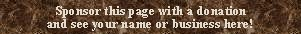

|
Contras Spanish |  |
Mentioned only by Williams, who says: �Spanish pedal stops, open or stopped basic flue rank�.
Osiris contains 95 examples: half of them are of 16' pitch, a quarter are at 8' pitch, nine are of two ranks at 16' and 8' pitch, and two are at 32' pitch. This stop is often the only pedal stop.
Contras 16', Pedal; Cathedral, Roda de Isabena, Huesca, Spain; Peruga 1653.
|
Original website compiled by Edward L. Stauff. For educational use only. Contras.html - Last updated 15 January 2003. |
Home Full Index |